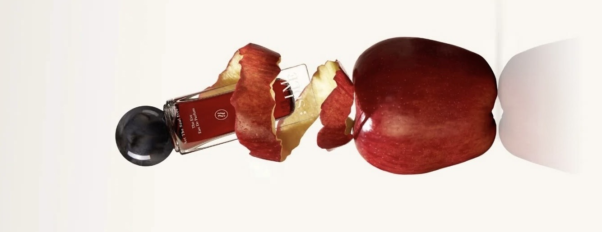
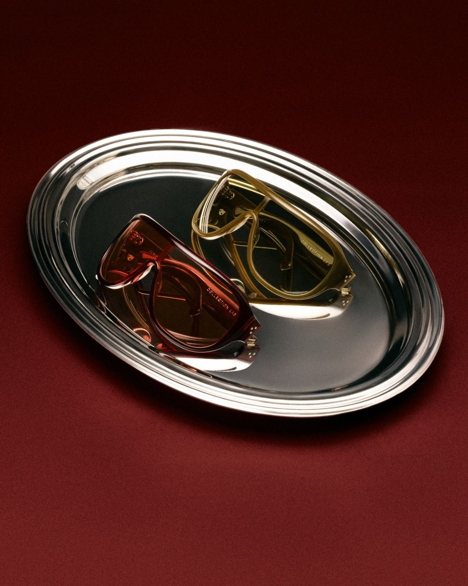

Продукт плохофото
фотоотделён от
фонафото

[03]
Если края продукта сливаются с фоном, нейросеть не понимает, где кончается упаковка, и дорисовывает границу сама.
[проверьте]Контур чистый, контраст с фоном есть, на краях нет бликов.
фото вылетом справа:
продукт сливается с фоном
продукт сливается с фоном

фото вылетом слева:
поплывший текст на упаковке
поплывший текст на упаковке

[04]
Генерация перерисовывает текст
Надписи и логотипы для модели просто картинка, а не слова: буквы могут поплыть или превратиться в похожие знаки.
[проверьте]Мелкий текст на упаковке сверен с оригиналом.
чек-лист перед генерацией
03 / 05
03 / 05